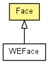

toxi.geom.mesh
Class Face
java.lang.Object
 toxi.geom.mesh.Face
toxi.geom.mesh.Face
- Direct Known Subclasses:
- WEFace
public class Face
- extends java.lang.Object

| Methods inherited from class java.lang.Object |
equals, getClass, hashCode, notify, notifyAll, wait, wait, wait |
a
public Vertex a
b
public Vertex b
c
public Vertex c
uvA
public Vec2D uvA
uvB
public Vec2D uvB
uvC
public Vec2D uvC
normal
public Vec3D normal
Face
public Face(Vertex a,
Vertex b,
Vertex c)
Face
public Face(Vertex a,
Vertex b,
Vertex c,
Vec2D uvA,
Vec2D uvB,
Vec2D uvC)
computeNormal
public void computeNormal()
flipVertexOrder
public void flipVertexOrder()
getCentroid
public Vec3D getCentroid()
getVertices
public final Vertex[] getVertices(Vertex[] verts)
toString
public java.lang.String toString()
- Overrides:
toString in class java.lang.Object
toTriangle
public Triangle3D toTriangle()
- Creates a generic
Triangle3D instance using this face's vertices.
The new instance is made up of copies of the original vertices and
manipulating them will not impact the originals.
- Returns:
- triangle copy of this mesh face